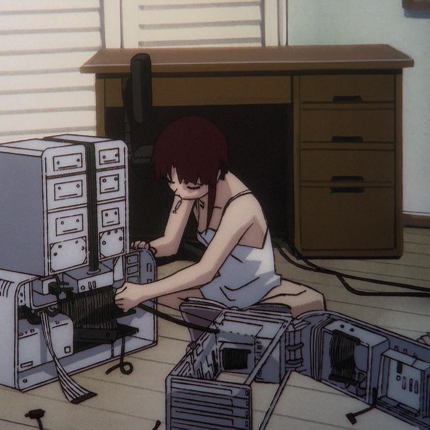

2026
análise e desenvolvimento de sistemas
curso superior na área de tecnologia, com estudos envolvendo programação, desenvolvimento web, arquitetura de computadores, lógica e fundamentos relacionados ao desenvolvimento de sistemas
sou estudante de ads e estou começando minha trajetória na área de tecnologia, este portfólio reúne um pouco sobre mim, meus estudos, interesses e o que venho aprendendo durante o curso
ads - estudante
tenho 19 anos, moro em atibaia, são paulo, e curso análise e desenvolvimento de sistemas no IFSP de bragança paulista. ainda estou no início da minha formação e aprendendo programação aos poucos, principalmente através das atividades e conteúdos das aulas
gosto de tecnologia, jogos, música e de organizar meus estudos. tenho interesse em entender melhor como computadores, sites e sistemas funcionam por trás daquilo que usamos no dia a dia
meu objetivo é continuar desenvolvendo minhas habilidades durante a faculdade e, futuramente, conseguir uma oportunidade de estágio na área de tecnologia

curso superior na área de tecnologia, com estudos envolvendo programação, desenvolvimento web, arquitetura de computadores, lógica e fundamentos relacionados ao desenvolvimento de sistemas
estou aprendendo html, css e javascript em atividades acadêmicas, aprendendo a estruturar páginas, personalizar layouts e adicionar interações simples aos sites
gosto de jogar no computador, principalmente jogos como league of legends, roblox e the sims
música faz parte do meu dia a dia. gosto de descobrir artistas e estilos diferentes e criar minhas próprias playlists
tenho interesse por computadores, peças, upgrades e por entender melhor como o hardware e o software trabalham juntos
gosto de organizar matérias, anotações e tarefas de forma clara para conseguir acompanhar melhor o conteúdo da faculdade
desenvolvimento deste próprio portfólio utilizando html, css e javascript, com layout responsivo
atividades relacionadas aos principais componentes de um computador, armazenamento, memória, processador e funcionamento básico do hardware
prática de raciocínio lógico e resolução de exercícios para desenvolver uma base melhor antes de avançar para projetos maiores de programação
☆*:.｡.o(≧▽≦)o.｡.:*☆
conforme eu aprender novas tecnologias e desenvolver novos trabalhos, este portfólio irá aumentar, espero que você tenha gostado de conhecer um pouco sobre mim e meus estudos